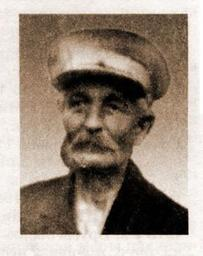

|  |
| Иосиф Богумилович Тарновский 1880 Польша - 29.10.1937 Гомель |
 |
Дата рождения: 1880 г.
Место рождения: Польша
Пол: мужчина
Профессия / место работы: счетовод районной кассы Белорусской железной дороги
Место проживания: Гомель
Дата расстрела: 29 октября 1937 г.
Дата ареста: 20 августа 1937 г.
Осуждение: 19 октября 1937 г.
Осудивший орган: постановление Комиссии НКВД СССР и прокурора СССР
Приговор: ВМН - расстрел
Дата реабилитации: 27 августа 1957 г.
Источники данных: Книга Память Гомельского района
https://ru.openlist.wiki/%D0%A2%D0%B0%D1%80%D0%BD%D0%BE%D0%B2%D1%81%D0%BA%D0%B8%D0%B9_%D0%98%D0%BE%D1%81%D0%B8%D1%84_%D0%91%D0%BE%D0%B3%D1%83%D0%BC%D0%B8%D0%BB%D0%BE%D0%B2%D0%B8%D1%87_(1880)